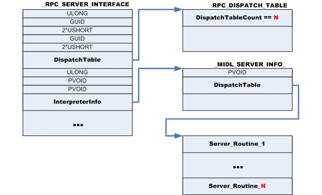

Довольно часто, во время исследования внутренних механизмов Windows, возникает
необходимость исследования RPC-NDR взаимодействия процессов. В этой небольшой
заметке я расскажу о скрипте для WinDbg, который может упростить жизнь при
исследовании RPC-сервера.
Для примера возьмем RPC сервер
Service Control Manager (SCM).
Задача: получить список функций RPC-сервера ntsvcs/svcctl. В
качестве экспериментального стенда я использовал виртуальную машину VMWare
с установленной MS Windows 2003 SP2 и подключенным отладчиком WinDbg.
Итак, дожидаемся запуска процесса services.exe и устанавливаем точку
останова на регистрацию нового RPC-сервера:
ba e 1 RPCRT4!RpcServerRegisterIfEx
Первый параметр функции rpcrt4!RpcServerRegisterIfEx(...) – указатель на
_RPC_SERVER_INTERFACE. Это и есть интересующий нас адрес. В этой
структуре нас интересуют 2-а поля:
- DispatchTable – указатель на структуру RPC_DISPATCH_TABLE, в первом ULONG’е которой хранится количество функций обработчиков.
- InterpreterInfo – указатель на структуру _MIDL_SERVER_INFO_. Второе поле структуры MIDL-информации (смещение sizeof(PVOID)) содержится адрес массива обработчиков RPC-сервера.

Итак, вызываем скрипт, который отобразит нам список функций-обработчиков
RPC-сервера services.exe. Думаю не нужно объяснять как получить первый
параметр функции, находясь на ее первой инструкции, лишь напомню, что в стеке
в начале будет лежать адрес возврата, поэтому пропускаем его:
kd> $$>a< D:\Projects\DCMD\RpcServer_IfHandle.dcmd (poi(@esp+@$ptrsize))
RPC-Server Routine Table 0x01001660, number of Routines 47(0x2f)
Таблица получена, теперь, можно ее распечатать. При наличие символов смысл
каждого обработчика становится ясен:
kd> dps 0x01001660 L 0x2f
01001660 0100276b services!RCloseServiceHandle
01001664 010075bf services!RControlService
01001668 01012ba3 services!RDeleteService
0100166c 01015792 services!RLockServiceDatabase
01001670 01016ac4 services!RQueryServiceObjectSecurity
01001674 01016bc5 services!RSetServiceObjectSecurity
01001678 01002ad7 services!RQueryServiceStatus
0100167c 010057f7 services!RSetServiceStatus
01001680 01006a61 services!RUnlockServiceDatabase
01001684 010078f3 services!RNotifyBootConfigStatus
01001688 0100553c services!RI_ScSetServiceBitsW
0100168c 0100de85 services!RChangeServiceConfigW
01001690 01013786 services!RCreateServiceW
01001694 01015804 services!REnumDependentServicesW
01001698 0100de48 services!REnumServicesStatusW
0100169c 0100295c services!ROpenSCManagerW
010016a0 01002820 services!ROpenServiceW
010016a4 01006fc3 services!RQueryServiceConfigW
010016a8 0101564f services!RQueryServiceLockStatusW
010016ac 01005e78 services!RStartServiceW
010016b0 01012c9f services!RGetServiceDisplayNameW
010016b4 01012d21 services!RGetServiceKeyNameW
010016b8 01015f75 services!RI_ScSetServiceBitsA
010016bc 0101591d services!RChangeServiceConfigA
010016c0 01015ad8 services!RCreateServiceA
010016c4 01015bc7 services!REnumDependentServicesA
010016c8 0100ddc8 services!REnumServicesStatusA
010016cc 01004ff2 services!ROpenSCManagerA
010016d0 0100502f services!ROpenServiceA
010016d4 0100730d services!RQueryServiceConfigA
010016d8 01015cac services!RQueryServiceLockStatusA
010016dc 01009573 services!RStartServiceA
010016e0 01015cee services!RGetServiceDisplayNameA
010016e4 01015dba services!RGetServiceKeyNameA
010016e8 01014c27 services!RI_ScGetCurrentGroupStateW
010016ec 010158ed services!REnumServiceGroupW
010016f0 010159e3 services!RChangeServiceConfig2A
010016f4 010138f5 services!RChangeServiceConfig2W
010016f8 01015c45 services!RQueryServiceConfig2A
010016fc 01013bac services!RQueryServiceConfig2W
01001700 01005ba8 services!RQueryServiceStatusEx
01001704 0100785b services!REnumServicesStatusExA
01001708 01007456 services!REnumServicesStatusExW
0100170c 01008000 services!RI_ScSendTSMessage
01001710 01015e86 services!RCreateServiceWOW64A
01001714 01013741 services!RCreateServiceWOW64W
01001718 010130b5 services!RI_ScQueryServiceTagInfo
Скачать dcmd-файл, содержащий описанный выше скрипт
ΞρεΤΙκ